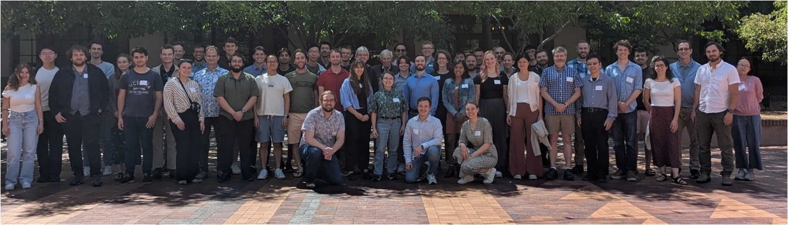

EXCESS Workshop


Many low-threshold experiments observe sharply rising event rates of yet unknown origins below a few hundred eV, and larger than expected from known backgrounds. Due to the significant impact of this excess on the dark matter or neutrino sensitivity of these experiments, a collective effort has been started to share the knowledge about the individual observations. For this, the EXCESS Workshop was initiated.
In its first iteration in June 2021, ten rare event search collaborations contributed to this initiative via talks and discussions. The contributing collaborations were CONNIE, CRESST, DAMIC, EDELWEISS, MINER, NEWS-G, NUCLEUS, RICOCHET, SENSEI and SuperCDMS. They presented data about their observed energy spectra and known backgrounds together with details about the respective measurements. In the resulting white paper (SciPost Phys. Proc. 9, 001 (2022)), we summarize the presented information and give a comprehensive overview of the similarities and differences between the distinct measurements. The provided data is furthermore publicly available on the workshop's data repository together with a plotting tool for visualization.
A recent review article (Annual Review of Nuclear and Particle Science 75, 301) summarizes the broader state of low-energy backgrounds in solid-state phonon and charge detectors.
We were stunned about the positive resonance of the workshop, and it took place annually since 2022. Recently also quantum devices such as superconducting qubits joined the workshop effort to study low energy backgrounds.